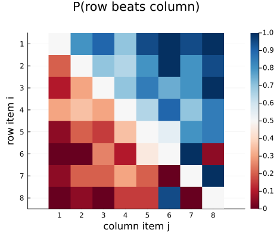
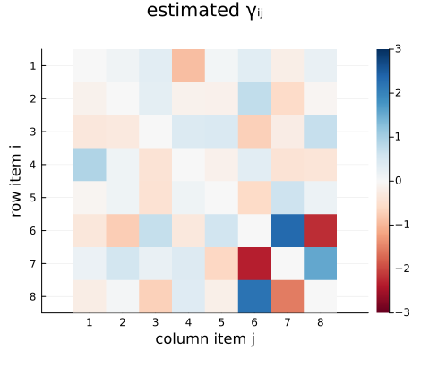
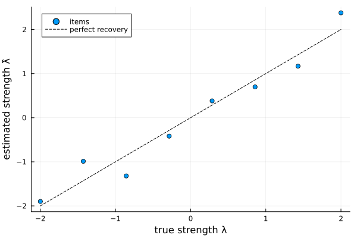
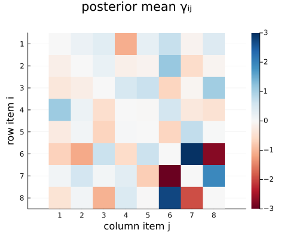
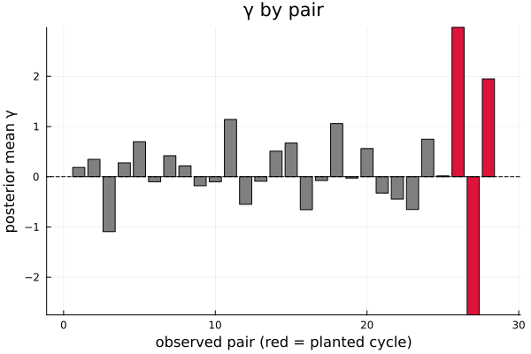

Intransitive Bradley–Terry models
The Bradley–Terry and Thurstone models impose stochastic transitivity: a single latent scale orders the items, so if $i$ tends to beat $j$ and $j$ tends to beat $k$, then $i$ tends to beat $k$. Real judgement data sometimes violate this — the construct may be multidimensional, or preferences may depend on the particular pairing. The Intransitive model adds a skew-symmetric per-pair term to the linear predictor,
\[\operatorname{logit} P(i \succ j) = (\lambda_i - \lambda_j) + \gamma_{ij}, \qquad \gamma_{ij} = -\gamma_{ji},\]
where $\gamma_{ij}$ captures the component of the preference between $i$ and $j$ that the transitive scale cannot explain. A large $\gamma$ is a warning that the one-dimensional scale — and hence the rank order — is an inadequate summary of the judgements. Setting every $\gamma_{ij} = 0$ recovers the plain Bradley–Terry model.
With one $\gamma$ per observed pair the model is saturated, so $\gamma$ must be regularised — this is also what identifies $\lambda$ (it becomes the best transitive fit, with $\gamma$ the intransitive residual):
- Maximum likelihood (
MLE) adds a ridge penalty $\tfrac{1}{2\sigma^2_\gamma}\sum \gamma_{ij}^2$ with a fixed scaleσ²γ. - Bayesian (
Bayesian) puts $\gamma_{ij} \sim N(0, \sigma^2_\gamma)$ and samples $\sigma^2_\gamma$ from an inverse-gamma hyperprior, so the overall amount of intransitivity is inferred from the data.
Simulating intransitive data
We take eight items with a clean transitive gradient, then plant a single intransitive cycle among three of them by adding a skew-symmetric $\gamma$: item 6 tends to beat item 7, item 7 beats item 8, but item 8 beats item 6, against what their strengths alone would predict.
using ComparativeJudgement
using Random
rng = MersenneTwister(7)
K = 8
λ_true = range(2.0, -2.0; length=K) |> collect
labels = ["item" * lpad(i, 2, '0') for i in 1:K]
Γ = zeros(K, K) # skew-symmetric intransitivity
cyc = (6, 7, 8); g = 3.0
for (a, b) in ((cyc[1], cyc[2]), (cyc[2], cyc[3]), (cyc[3], cyc[1]))
Γ[a, b] += g; Γ[b, a] -= g
end
logistic(x) = 1 / (1 + exp(-x))
wins = zeros(Int, K, K)
for i in 1:K, j in (i + 1):K
p = logistic(λ_true[i] - λ_true[j] + Γ[i, j])
for _ in 1:20 # 20 comparisons per pair
rand(rng) < p ? (wins[i, j] += 1) : (wins[j, i] += 1)
end
end
data = PairwiseData(wins, labels)The intransitive model uses the same aggregate PairwiseData as plain Bradley–Terry, since $\gamma$ is a per-pair (not per-rater) effect. The planted cycle is visible in the raw win proportions — item 8 beats item 6 even though it sits lower on the scale:
using Plots
N = wins .+ wins'
winprop = [N[i, j] == 0 ? 0.5 : wins[i, j] / N[i, j] for i in 1:K, j in 1:K]
heatmap(winprop; c=:RdBu, clims=(0, 1), aspect_ratio=1, yflip=true,
xticks=(1:K, 1:K), yticks=(1:K, 1:K),
xlabel="column item j", ylabel="row item i",
title="P(row beats column)", size=(470, 420))
Maximum likelihood
fitted = fit(BradleyTerryIntransitive(), MLE(), data)
λ̂ = strengths(fitted)
(probability(fitted, "item06", "item07"), loglikelihood(fitted))(0.8825404686098498, -212.00307076169656)strengths returns the transitive scale (centred to sum to zero) and probability the fitted win probability including the $\gamma$ term. intransitivity returns the estimated skew-symmetric matrix; its large entries pick out exactly the planted cycle, while every other pair sits near zero:
Γ̂ = intransitivity(fitted)
heatmap(Γ̂; c=:RdBu, clims=(-g, g), aspect_ratio=1, yflip=true,
xticks=(1:K, 1:K), yticks=(1:K, 1:K),
xlabel="column item j", ylabel="row item i",
title="estimated γᵢⱼ", size=(470, 420))
The recovered strengths still track the (centred) truth, because the ridge penalty pushes the cyclic structure into $\gamma$ rather than distorting $\lambda$:
using Statistics: mean
λc = λ_true .- mean(λ_true)
scatter(λc, λ̂; label="items", markersize=4, legend=:topleft,
xlabel="true strength λ", ylabel="estimated strength λ̂")
plot!(identity, extrema(λc)...; linestyle=:dash, color=:black,
label="perfect recovery")
The penalty scale σ²γ controls how much intransitivity the fit will admit; a smaller value shrinks $\gamma$ harder toward zero:
strong = fit(BradleyTerryIntransitive(), MLE(), data; σ²γ=0.05)
(maximum(abs, intransitivity(strong)), maximum(abs, intransitivity(fitted)))(0.45049316896380487, 2.3491906272708145)Bayesian inference
The Bayesian fit samples $\lambda$, the per-pair $\gamma$ and the variance $\sigma^2_\gamma$ jointly, so the degree of intransitivity is inferred rather than fixed. The default prior is an IntransitivityPrior (a NormalPrior on $\lambda$ and an InverseGammaPrior on $\sigma^2_\gamma$).
method = Bayesian(n_samples=1500, n_burnin=500)
bayes = fit(BradleyTerryIntransitive(), method, data; rng=MersenneTwister(1))
(posterior_mean(bayes)[6], credible_interval(bayes, 6; prob=0.95))(-1.3177430612025363, (-2.3391040948800663, -0.4192282173276045))Posterior summaries of the strengths come from posterior_mean, posterior_std and credible_interval. The posterior mean of $\gamma$ (from intransitivity) again isolates the planted cycle:
Γ̄ = intransitivity(bayes)
heatmap(Γ̄; c=:RdBu, clims=(-g, g), aspect_ratio=1, yflip=true,
xticks=(1:K, 1:K), yticks=(1:K, 1:K),
xlabel="column item j", ylabel="row item i",
title="posterior mean γᵢⱼ", size=(470, 420))
The three cyclic pairs carry $\gamma$ well away from zero while the rest of the matrix stays put — direct evidence that a single transitive scale does not fully describe these judgements:
pairs = bayes.result.pairs
γmean = vec(sum(bayes.result.γ_samples; dims=1)) ./ size(bayes.result.γ_samples, 1)
cycset = Set(((6, 7), (7, 8), (6, 8)))
isc(p) = (p in cycset)
cols = [isc(pairs[k]) ? :crimson : :grey for k in 1:length(pairs)]
bar(1:length(pairs), γmean; color=cols, legend=false,
xlabel="observed pair (red = planted cycle)", ylabel="posterior mean γ",
title="γ by pair")
hline!([0]; color=:black, linestyle=:dash)